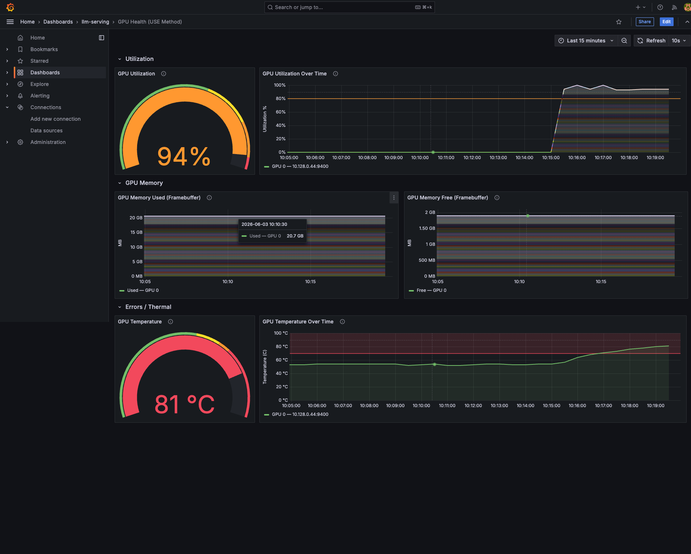
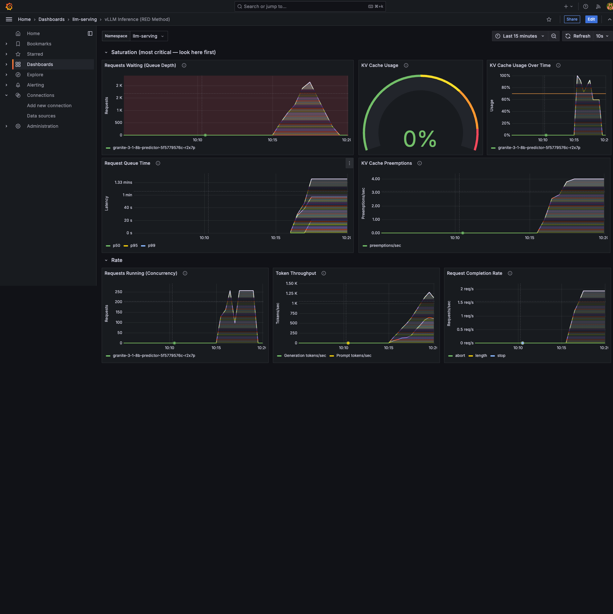
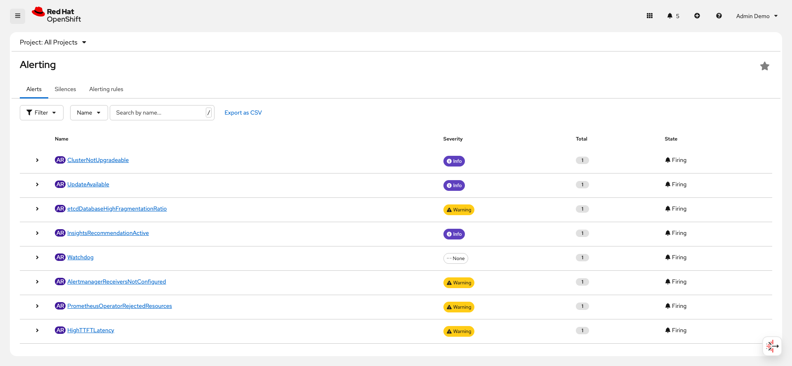

Alert Lifecycle and Correlation
Concepts
Alerts tell you something is wrong. Dashboards tell you what and why. The real power of the observability pipeline you have built across this course comes from using alerts and dashboards together — the alert reaches out to get your attention, and the dashboard gives you the context to diagnose and act.
In this exercise, you will correlate firing alerts with dashboard panels, stop the load test, and watch the full resolution cycle. This completes the alert lifecycle: Inactive, Pending, Firing, and Resolved.
Lab
1. Correlate Across All Four Windows
While alerts are firing from the load test in the previous exercise, compare what you see across all four views:
| What the Alert Says | What GPU Dashboard Shows | What vLLM Dashboard Shows |
|---|---|---|
HighGPUUtilization (93%) |
GPU Utilization gauge is in the red zone above the 80% threshold line |
— |
InferenceQueueBacklog (500+ waiting) |
— |
Requests Waiting panel shows hundreds of requests well above the red zone at 5 |
KVCacheHighUsage (0.99) |
GPU Memory panels stay relatively flat (pre-allocated) |
KV Cache gauge at 99-100% above the 70% threshold line |
HighTTFTLatency (p95 = 150s) |
— |
TTFT panel shows p95 line far above the 1-second threshold |
Notice the pattern: every firing alert has a corresponding dashboard panel where the metric is visibly above the threshold line. This is the alert-dashboard connection from the Alert Design for AI Serving lecture — the thresholds in the PrometheusRule YAMLs intentionally match the threshold lines on the Grafana dashboards.
Click on a Firing alert in the OpenShift Console to see its annotations. The description field uses template variables to show the actual metric value (for example, "142 requests waiting in inference queue"). This gives you immediate context without needing to open a dashboard.
|
2. Stop the Load Test and Observe Resolution
Press Ctrl+C in the terminal running the load test.
Now watch all four windows as the system recovers.
Window 1 (Node Health)
-
CPU Usage drops back to baseline (approximately 5-15%)
-
Network traffic returns to idle levels
-
The time series panels show the load spike as a clear historical blip
Window 2 (GPU Health)
-
GPU Utilization drops back toward 5% over 30-60 seconds as existing requests complete
-
GPU Power Draw decreases
-
GPU Temperature may continue rising briefly (thermal lag), then slowly drops
-
GPU Memory stays roughly the same (KV cache pool remains allocated)

Window 3 (vLLM Inference)
-
Requests Waiting drops to 0 (no new requests arriving)
-
Requests Running drops to 0 as remaining requests complete their generation
-
KV Cache Usage drops to 0% as completed requests release cache blocks
-
Token Throughput returns to 0
-
Latency panels show the spike as a historical blip

Window 4 (OpenShift Alerting)
-
Firing alerts remain Firing for a brief period (Prometheus needs to evaluate the expression and find it is no longer true)
-
After 1-2 scrape intervals (30-60 seconds), alerts transition to Resolved
-
Resolved alerts may disappear from the default view or show a green indicator

How Long Until Alerts Resolve?
Alert resolution time depends on the metric type:
-
Gauge-based alerts (InferenceQueueBacklog, KVCacheHighUsage) resolve faster because their metrics drop immediately when load stops. Expect resolution within 1-2 Prometheus scrape intervals (30-60 seconds).
-
Histogram-based alerts (HighTTFTLatency) take longer because the
rate(…[5m])window retains historical data. Even after load stops, the 5-minute rate window keeps the calculated value elevated. Expect several minutes before the value drops below the threshold. -
GPU utilization (HighGPUUtilization) resolves within 30-60 seconds after remaining in-flight requests complete.
3. Optional Experimentation
If time permits, try these experiments to deepen your understanding.
Experiment 1: Change the concurrency
Run the load test with lower concurrency:
$ bash alerts/load-test.sh 50 10With 50 concurrent requests, observe:
-
InferenceQueueBacklog may not fire if the KV cache can handle 50 requests without queuing
-
KVCacheHighUsage may hover around 30-50% without crossing 70%
-
HighGPUUtilization may still fire (the GPU is busy with 50 concurrent requests)
Try increasing to 300:
$ bash alerts/load-test.sh 300 10With 300 concurrent requests, observe deeper queuing, higher TTFT values, and faster alert transitions. This demonstrates that concurrency relative to KV cache capacity is what drives application-level alerts.
Experiment 2: Modify an alert threshold
Edit the GPU health PrometheusRule to change the HighGPUUtilization threshold from 80 to 95:
$ oc edit prometheusrule gpu-health-alerts -n nvidia-gpu-operatorChange DCGM_FI_DEV_GPU_UTIL > 80 to DCGM_FI_DEV_GPU_UTIL > 95.
Save and exit.
Re-run the load test and observe whether this alert still fires.
This demonstrates the impact of threshold tuning.
After the experiment, restore the original threshold by re-applying the YAML:
$ oc apply -f alerts/prometheus-rules-gpu.yamlExperiment 3: Examine alert history
After running the load test:
-
Navigate to Observe > Alerting in the OpenShift Console.
-
Click on a resolved alert.
-
Look at the Alert History section — it shows when the alert entered each state (Pending, Firing, Resolved) with timestamps.
This timeline helps you correlate events: "The load test started at 14:23, InferenceQueueBacklog went Pending at 14:24 (1 minute for), and Fired at 14:24. We stopped at 14:30, and it resolved at 14:31."
Checkpoint
| Check | How to Verify | Expected Result |
|---|---|---|
Dashboard-alert correlation |
Compare firing alert thresholds with dashboard panels |
Threshold lines match alert thresholds |
Alerts resolved after load stop |
Observe > Alerting > Alerts (after stopping load) |
Previously firing alerts show Resolved |
GPU dashboard shows spike and recovery |
Grafana GPU Health dashboard |
Utilization spike visible in time series followed by return to baseline |
vLLM dashboard shows saturation and recovery |
Grafana vLLM Inference dashboard |
Queue depth and KV cache spikes visible followed by return to zero |
Alert history available |
Click on a resolved alert in the Console |
State transition timestamps visible |
Summary
In this exercise, you:
-
Correlated firing alerts with dashboard panels and confirmed that every alert threshold matches a visual threshold line on the corresponding Grafana dashboard
-
Stopped the load test and observed the resolution cycle across all four views
-
Learned that gauge-based alerts resolve faster than histogram-based alerts because their metrics drop immediately
-
Explored optional experiments with different concurrency levels and threshold tuning
This completes the Alerting chapter. Looking back across the entire course, you have built a complete observability pipeline for AI model serving on OpenShift AI:
-
Chapter 1 — Observability Foundations: Enabled User Workload Monitoring so Prometheus can scrape your applications
-
Chapter 2 — Model Deployment: Deployed Granite 3.1 8B and verified that the auto-created ServiceMonitor connects vLLM metrics to Prometheus
-
Chapter 3 — Dashboards: Installed Grafana, connected it to Thanos Querier, and deployed three dashboards (Node Health, GPU Health, vLLM Inference) that visualize all three metric layers
-
Chapter 4 — Alerting: Created five alert rules across two PrometheusRules in two namespaces, ran a load test, and observed the full alert lifecycle from Inactive through Firing to Resolved
Every component connects: UWM Prometheus scrapes the metrics, the ServiceMonitor tells Prometheus where to find them, the Grafana dashboards make them visible, and the PrometheusRule alerts notify you when thresholds are crossed. The dashboards show you what is happening; the alerts tell you when to look.
In the next chapter, you will apply everything you have learned in a Challenge Lab that tests your ability to build this pipeline independently.